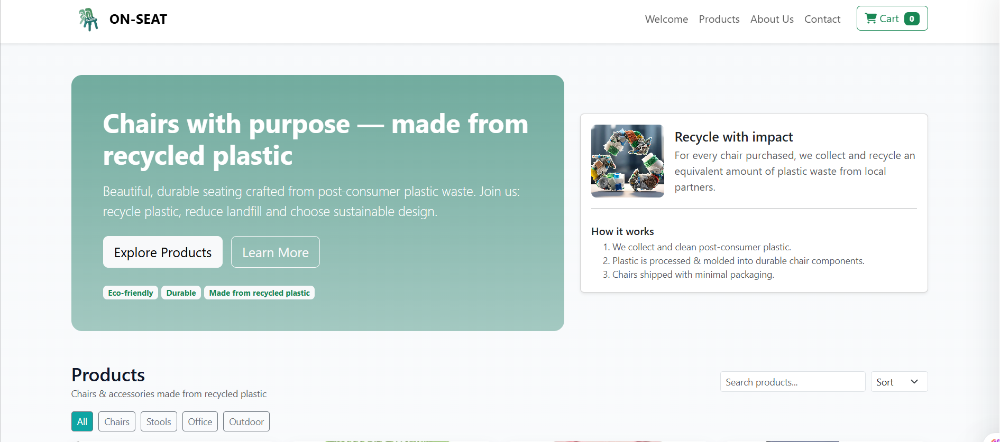

ON-SEAT - Recycled Plastic Chairs
Socio-technical circular economy project
ON-SEAT is a socio-technical project aimed at tackling the growing plastic pollution crisis in Tunisia through a community-driven, circular economy approach.
The initiative employs drone-based detection, computer vision classification, and a structured four-stage production process: collection, sorting, shredding, and molding. This transforms post-consumer plastic waste into durable, affordable furniture for educational and community institutions.
In addition to its environmental benefits, ON-SEAT creates significant socioeconomic impact by generating green employment opportunities in rural areas, fostering gender-inclusive participation, and establishing replicable rural recycling infrastructure.
The project aligns with SDGs 6, 8, 11, 12, 13, 15, and 17, making it a scalable model for sustainable development in resource-constrained communities throughout the broader North African region.